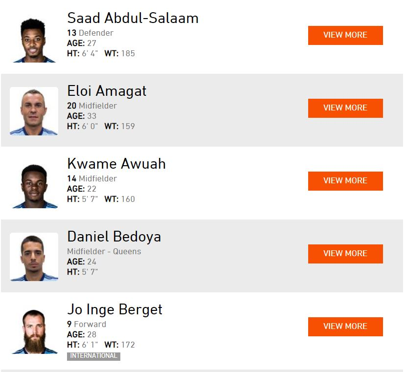
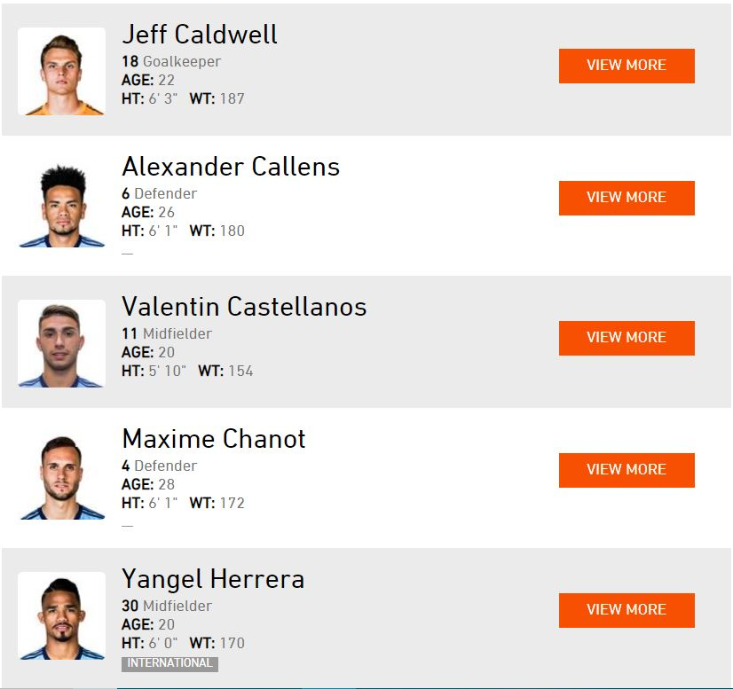
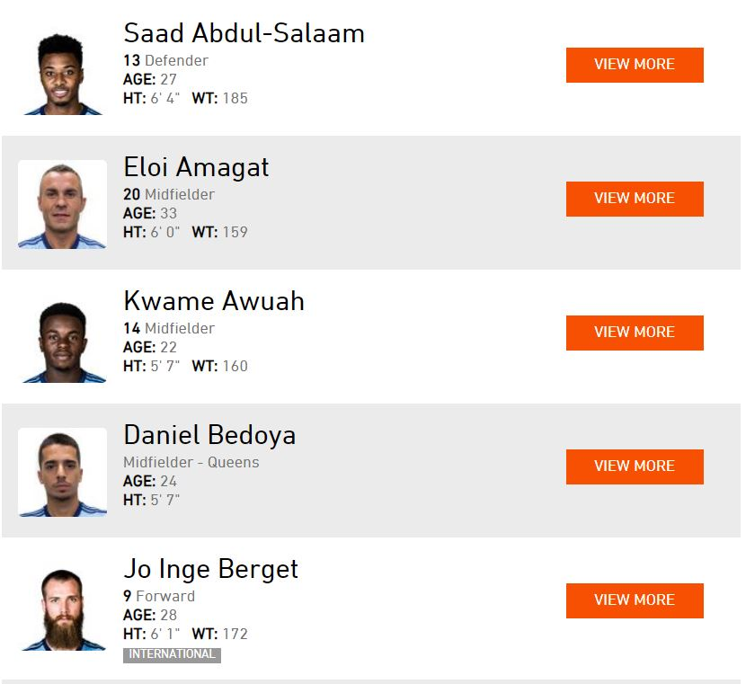
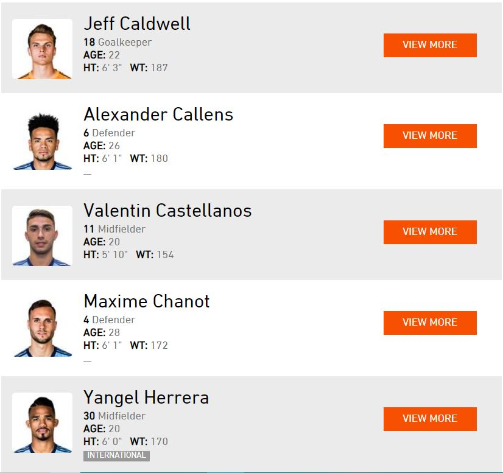

First Team



Queens Football Club is a soccer club based in New York City. It was founded by John Terry in 1995 and currently operate by Ashley Cole.Queens Football Club is a professional soccer team based in New York City, New York, that competes in Major League Soccer (MLS), the highest level of American soccer, as a member of the league's Eastern Conference. New York City began play in 2015, as the twentieth overall expansion team of the league. It is the first franchise to be based in the city, and the second in the New York metropolitan area, after New York Red Bulls, with whom they contest the Hudson River Derby. Since 2015, the club have played at Yankee Stadium in The Bronx. Jason Kreis was appointed as the club's first coach, remaining for a single year prior to being replaced by Patrick Vieira. Vieira guided New York City to their first MLS Cup playoff appearance the following season, as well as a runner-up berth in the Supporters' Shield in 2017. Vieira's teams also set Major League Soccer records for the largest improvement in wins for a consecutive season.Based on attendance from the 2016 regular season, New York City's fanbase is one of the largest in the league. In 2016, Forbes estimated the franchise was the third most valuable in MLS, worth over $285 million

